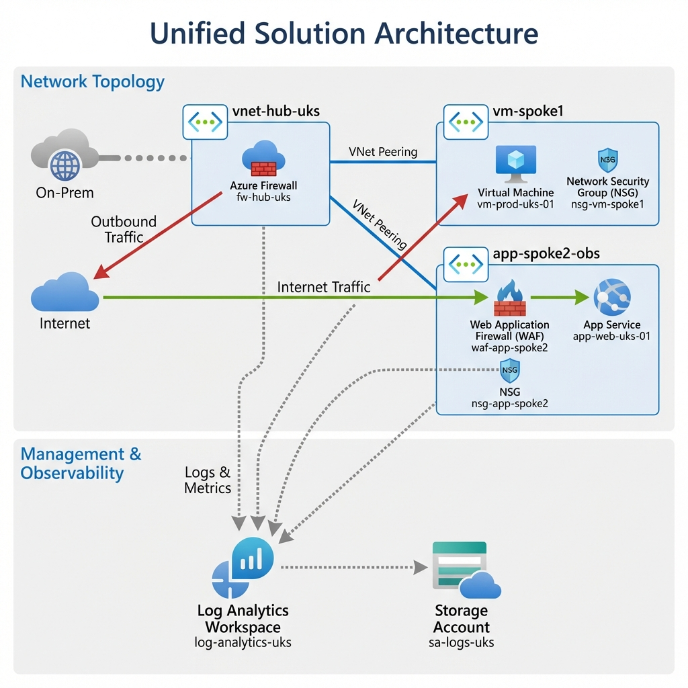
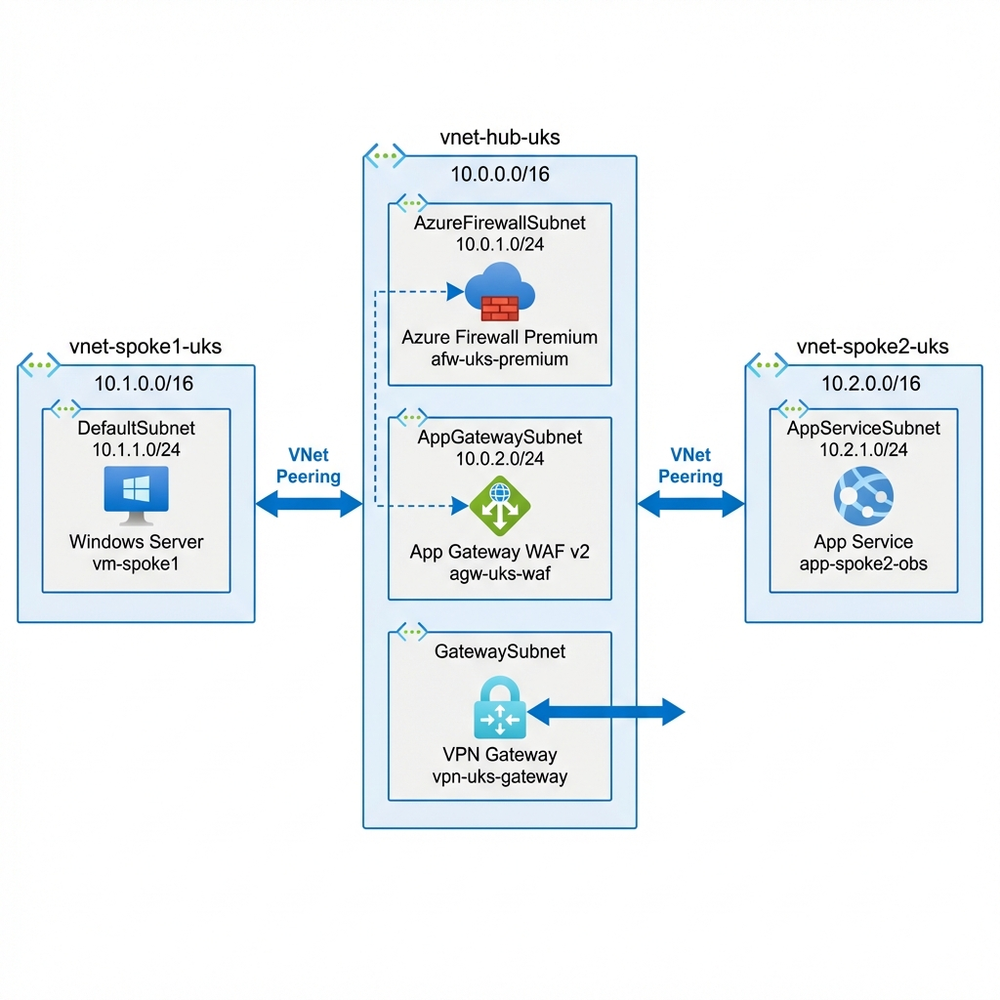
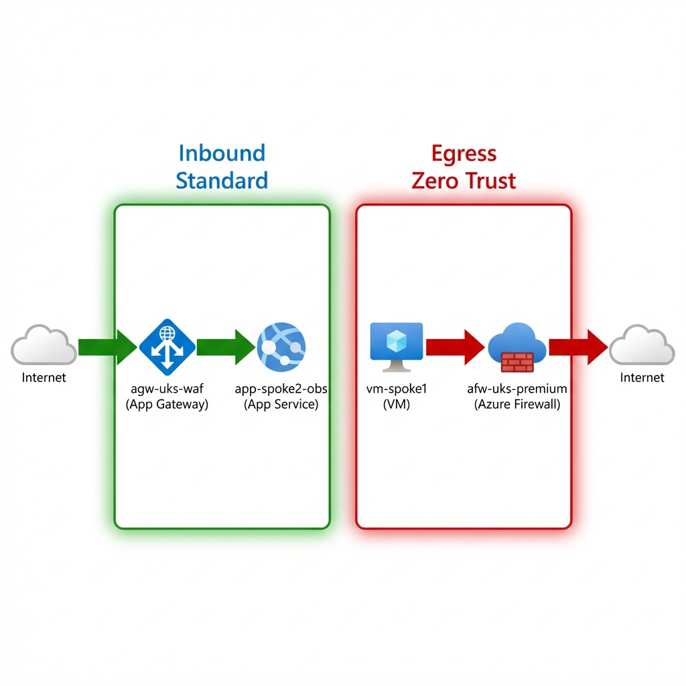
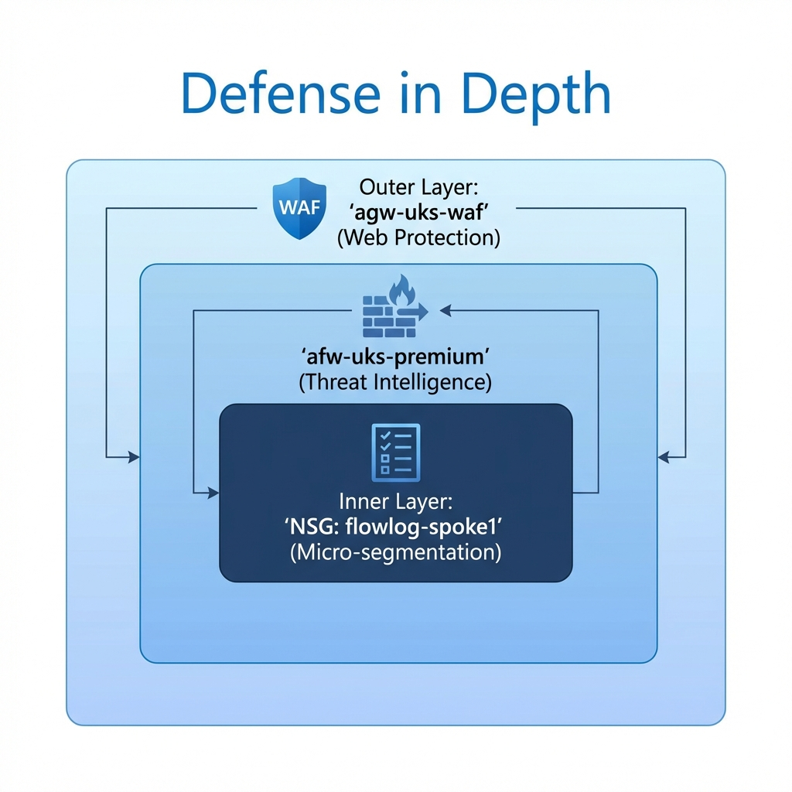
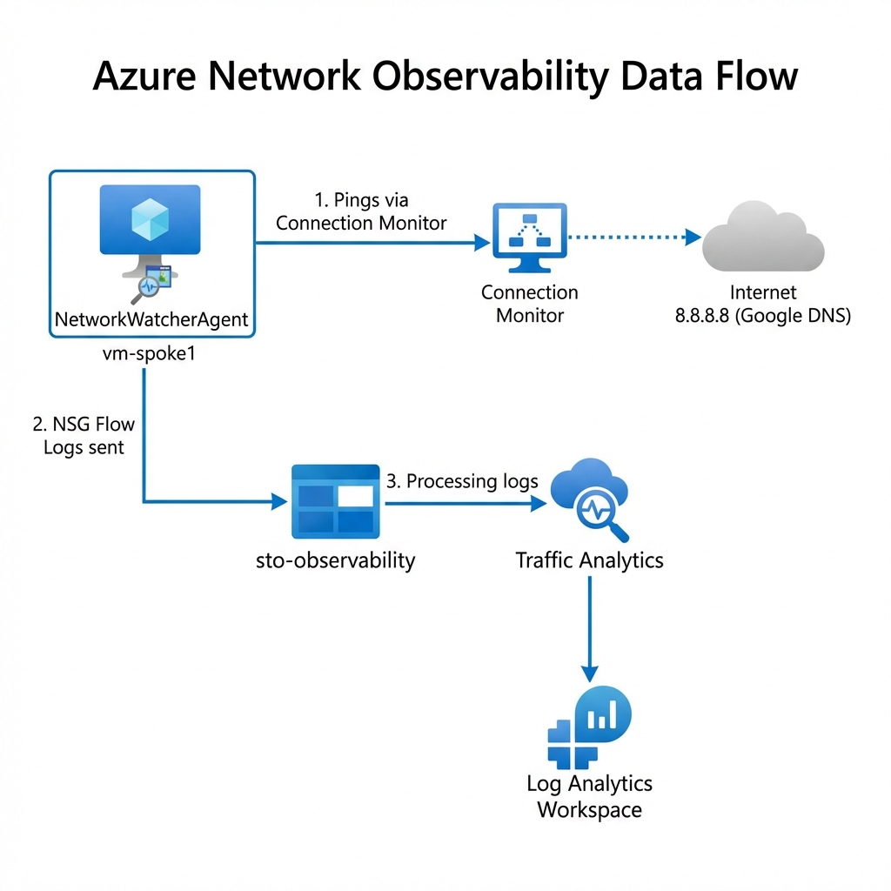

The "textbook" Hub-and-Spoke diagram is a lie. Real-world regulated environments don't just "connect" VNets—they inspect, block, and rigorously audit every packet.
Cloud reliability failures often represent a failure of "Day 2" operations: configuration drift, silent security failures, and opaque network paths. When your manager asks, "Why did that connection fail at 3 AM?", pointing to a static Visio diagram isn't enough.
This guide is not a "Hello World" tutorial. It documents a production-grade Landing Zone built for auditability, utilizing the "Trinity" of Observability to prove your network is healthy.

1. The Architecture: Hub-and-Spoke Reality
We implemented a Microsoft-native landing zone that mandates inspection and continuously validates assertions. This isn't just about connectivity; it's about Control.

The Core Components
- Hub VNet (Secure Core): The central inspection point (
10.0.0.0/16) hosting Azure Firewall Premium in its dedicated10.0.1.0/24subnet. - Spoke 1 (IaaS Workload): Hosts Windows Server 2022 ("UKLabs") in
10.1.0.0/16. No Public IPs allowed. - Spoke 2 (PaaS Workload): Hosts VNet-integrated Linux Web Apps in
10.2.0.0/16, forcing traffic through the Hub. - On-Prem Simulation: A dedicated VNet peered to the Hub to mimic an ExpressRoute connection, proving hybrid connectivity.
2. Design Decision: Parallel Edge Security
A common debate in Azure networking is "Serial Chaining" (WAF -> Firewall -> App) versus "Parallel" (WAF -> App, Firewall -> Internet). We chose Parallel (Zero Trust Edge).

Why Parallel?
- Efficiency: Avoids the "Firewall Tax" (latency and throughput costs) on pure web traffic that has already been scrubbed by the WAF.
- Visibility: Preserves the Client IP address for WAF geo-blocking and logging.
- Specialization: The WAF handles OWASP threats (SQLi, XSS), while the Firewall handles core IDPS and TLS inspection for egress.
3. Security: Defense in Depth
Security is not a single appliance; it's layers. Our design implements a "Defense in Depth" strategy where no single failure results in compromise.

The Non-Negotiables
- Single Inspection Plane: Azure Firewall Premium is the only path for east-west and egress traffic.
- Mandatory WAF: Inbound HTTP(S) must pass through App Gateway WAF v2 in Prevention Mode.
- Micro-segmentation: NSGs are applied on every subnet with a "Default Deny" mindset.
4. The "Trinity" of Observability
This is where most implementations fail. They build the network but forget to build the eyes to see it. We implement three pillars to "prove the negative."

| Tool | Role | What it does |
|---|---|---|
| VNet Flow
Logs (Recommended) |
The Wide Lens | Records entire VNet traffic. Captures encryption status. The modern standard. |
| NSG Flow
Logs (Legacy) |
The Macro Lens | Records granular Subnet/NIC events. Use only for legacy parity. |
| Traffic Analytics | The Brain | Visualizes flows, detecting malicious IPs and drift. |
| Connection Monitor | The Pulse | Tests critical paths (VM -> Google DNS) 24/7. |
💡 Architect's Note: VNet Flow Logs vs. NSG Flow Logs
Microsoft is evolving from NSG Flow Logs to the newer VNet Flow Logs engine. While they look similar, the distinction matters for simple reasons:
- Simplicity: VNet Flow Logs are enabled at the VNet level, preventing the "missed subnet" configuration drift common with NSG-level logging.
- Encryption Visibility: Only VNet Flow Logs can report the Encryption Status of traffic (critical if using VNet Encryption).
When to use which?
- ✅ USE VNet Flow Logs: For all new deployments ("Greenfield") and when you need to audit VNet Encryption.
- ⛔ DO NOT USE NSG Flow Logs: Unless you have a specific legacy requirement to monitor only a single NIC in a shared subnet to save fractional storage costs.
- Blind Spots: Remember that traffic to a Private Endpoint cannot be recorded at the endpoint itself. You must capture it at the source VM (the client side).
5. The Topology Dilemma: Where does the WAF go?
One of the most heated debates in Azure architecture is the placement of the Application Gateway (WAF) relative to the Azure Firewall. Microsoft Learn documents three core patterns. Here is the realist's take on when to use which:
1. The Parallel Pattern (The Pragmatist)
Layout: AppGW and Firewall sit side-by-side. Web traffic hits AppGW; Non-web hits Firewall.
- ✅ Pros: Simplest routing. No double-encryption capability needed. Cheapest.
- ⛔ Cons: Azure Firewall does NOT inspect the web traffic. You rely 100% on the WAF.
- Verdict: Use this for 90% of standard enterprise apps where WAF protection is sufficient.
2. AppGW -> Firewall (The Fortress)
Layout: Traffic hits WAF first, then is piped through Firewall for heavy inspection.
- ✅ Pros: "Zero Trust". Firewall sees everything, even web packets. Preserves Client IP (via X-Forwarded-For).
- ⛔ Cons: Complex UDRs. Needs Azure Firewall Premium to meaningful inspect encrypted web traffic (TLS Inspection).
- Verdict: Mandatory for Banking/High-Compliance where Defense in Depth is audited.
3. Firewall -> AppGW (The Shield)
Layout: Firewall filters bad IPs at the edge, THEN passes clean traffic to WAF.
- ✅ Pros: Stops DDoS/Scanners before they touch your expensive WAF instances.
- ⛔ Cons: Major Trap: The WAF only sees the Firewall's IP, not the Client ID, unless you enable expensive Proxy modes.
- Verdict: Rare. Use only if you have a massive IP-blocking requirement at the edge.
6. The Cost of Reality (FinOps)
"Why Premium? Why not Standard?" This is the most common question I get. The answer is simple: TLS Inspection.
Standard Firewall is blind to encrypted traffic (which is 99% of modern malware c2). If you can't inspect inside the HTTPS tunnel, you aren't secure; you're just routing packets.
Don't forget the Observability tax: While NSG Flow Logs are cheap (pennies/GB), looking at them isn't. Traffic Analytics processing and the Connection Monitor agents (approx. $25/month per node) add up. However, compared to the $10,000/hour cost of a Sev-1 outage where you "guess" the root cause, it's a negligible insurance premium.
6. Future Hardening
To move from "Baseline" to "Enterprise Standard," the roadmap includes:
- Single Pane of Glass: Azure Workbook to correlate "Red" traffic flows with Firewall Deny events.
- Policy-Driven Governance: Assigning Azure Policy (e.g.,
Deny-PublicIP-On-Spokes) to enforce standards in code. - CI/CD Pipelines: Moving from local "ClickOps" to GitHub Actions using OIDC Federation.
- Identity Hardening: Enabling System Assigned Managed Identity for Spoke VMs for zero-credential access.
📚 Deep Dive Resources
For those building their own baselines, here are the references we rely on:
- VNet Flow Logs Overview (The future state)
- Azure Security Baseline for Network Watcher
- Watch: Azure Network Watcher Deep Dive and Monitoring Patterns
- Follow: Azure Network Security Blog
Ready to deploy?
The full Terraform codebase, including the Windows Server 2022 refactor and Connection Monitor logic, is available on GitHub.